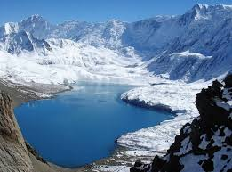

 Tilicho lake is one of the most popular sites, located in the Manang district of Nepal. Tilicho Lake lies at an altitude of 4,919 meters in the Annapurna range of the Himalayas.The trekking route combines Annapurna circuit trekking.Tilicho Lake is surrounded by mountain of Tilicho, Nilgiri, Khangsar, and the Muktinath peak that make the lake more delightful.